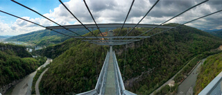
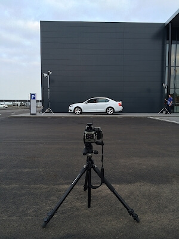
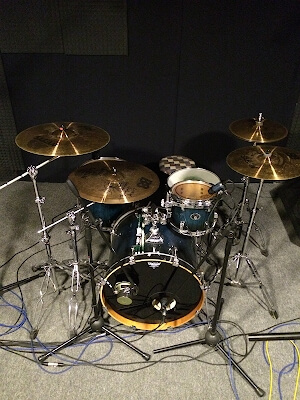
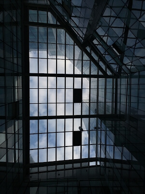
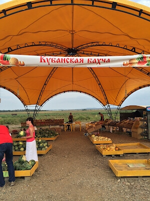
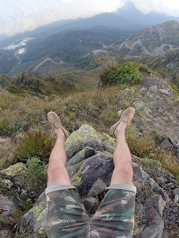
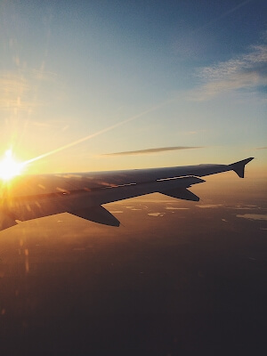
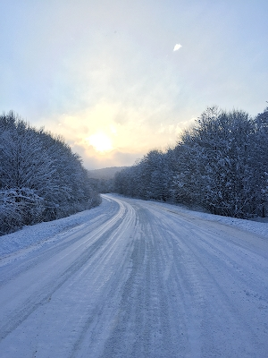

Взгляните на фотографии, которые выкладывают пользователи!
Видите, как не хватает ваших?
 Анна (5 минут назад) Прыгать или нет? Напишите в коментарии свой совет и смотрите прямую трансляцию в перископе, задавайте свои вопросы!- (5 минут назад) Прыгать или нет? Напишите в коментарии свой совет и смотрите прямую трансляцию в перископе, задавайте свои вопросы!
- (5 минут назад) Прыгать или нет? Напишите в коментарии свой совет и смотрите прямую трансляцию в перископе, задавайте свои вопросы!
- (5 минут назад) Прыгать или нет? Напишите в коментарии свой совет и смотрите прямую трансляцию в перископе, задавайте свои вопросы!
- (5 минут назад) Прыгать или нет? Напишите в коментарии свой совет и смотрите прямую трансляцию в перископе, задавайте свои вопросы!
- (5 минут назад) Прыгать или нет? Напишите в коментарии свой совет и смотрите прямую трансляцию в перископе, задавайте свои вопросы!
- (5 минут назад) Прыгать или нет? Напишите в коментарии свой совет и смотрите прямую трансляцию в перископе, задавайте свои вопросы!
Затмите их всех!
Выкладывайте все, что накопилось в телефоне!
